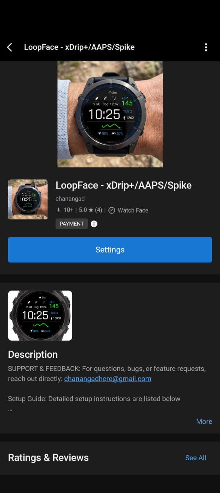
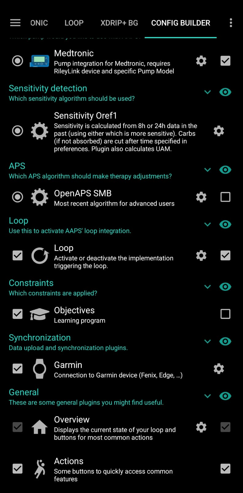
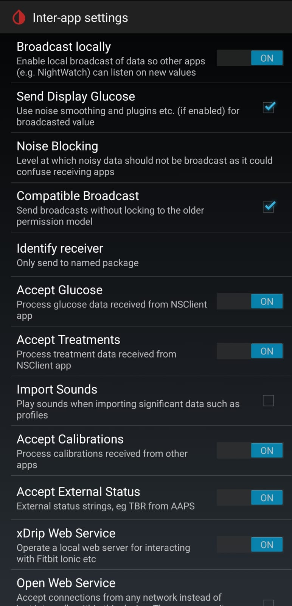

xDrip+, AAPS, Spike & Nightscout — Installation & Setup
Connect your CGM data to your Garmin watch using xDrip+ (Android), AAPS (Android), Spike (iOS), or Nightscout. Local sources work without internet — data flows over Bluetooth. Nightscout requires your site to be reachable from your phone.
- Install xDrip+ (Android)
- Or AAPS (Android)
- Or Spike (iOS)
- Or use Nightscout
- Open Garmin Connect app
- Find LoopFace in Connect IQ
- Download & sync to watch
- Enable web server in your app
- Select your app in LoopFace settings
- Data syncs automatically
Install the Companion App on Your Phone
First, install one of the compatible apps on your phone. Choose based on your device and preferences:
Popular open-source CGM app. Shows glucose from Dexcom, Libre, and other sensors.
Download from GitHubAdvanced diabetes management with closed-loop support. Provides IOB, COB and basal rate.
Download from GitHubCGM app for iPhone. Works with Dexcom, Libre and Nightscout followers. Shows IOB and COB.
spike-app.comSelf-hosted CGM data platform. LoopFace reads glucose, trend and delta from your Nightscout URL. If a looping system (AAPS/OpenAPS) is writing to it, IOB, COB and basal rate are shown too.
nightscout.github.ioInstall LoopFace on Your Garmin Watch
-
1
Open Garmin Connect on your phone
Make sure your watch is paired and Bluetooth is on.
-
2
Browse to the Connect IQ Store
In Garmin Connect, tap More → Connect IQ Store, or visit apps.garmin.com and search for LoopFace.

-
3
Tap Download
The watch face will sync to your watch automatically within a few minutes.
-
4
Set LoopFace as your active watch face
On the watch, hold the button to open the watch face picker and select LoopFace. Or in Garmin Connect, go to My Device → Watch Face.
Configure Your Companion App
Enable the local web server in your app so LoopFace can retrieve glucose data. Select the tab for your app:
-
1
Open AndroidAPS
Make sure you're running AAPS version 3.2.0.4 or newer.
-
2
Enable the Garmin plugin
Go to Config Builder → Synchronization and enable the Garmin Plugin. This activates the local HTTP server on port
28891.
-
3
Select AAPS in LoopFace settings
In Garmin Connect → My Device → Watch Faces → LoopFace → Settings, set Data Source to AAPS (this is the default). Leave the "Request Key" field blank.
Open your phone's browser and visit this URL. If you see JSON data with glucose values, AAPS is configured correctly.
-
1
Open xDrip+ on your Android phone
-
2
Enable the xDrip Web Server
Go to Settings → Inter-App Settings and enable xDrip Web-Server. This starts the local HTTP server on port
17580.
-
3
Select xDrip+ in LoopFace settings
In Garmin Connect → LoopFace → Settings → Data Source, select xDrip+.
Open your phone's browser and visit this URL. You should see JSON glucose data if the web server is running.
-
1
Open Spike on your iPhone
-
2
Enable the Internal HTTP Server
Go to Settings → Integration and enable Internal HTTP Server. This starts a local server on port
1979that LoopFace reads from. -
3
Open LoopFace settings in Garmin Connect
In the Garmin Connect app, go to My Device → Watch Faces → LoopFace → Settings.
-
4
Select Spike as your data source
Under Data Source, select Spike (iOS only).
-
5
Save and sync to your watch
Tap Save. Settings will sync to the watch automatically over Bluetooth within a few minutes.
Open Safari on your iPhone and visit this URL. If you see JSON glucose data, Spike is set up correctly.
-
1
Ensure your Nightscout site is running
You need a working Nightscout instance accessible over HTTPS — for example on Railway, Render, or your own server. If you haven't set one up yet, visit nightscout.github.io.
-
2
Generate a read-only access token
If your Nightscout site has AUTH_DEFAULT_ROLES set to anything other than
readable(i.e. it requires authentication), you'll need an access token. Skip to step 3 if your site is already publicly readable.To create a token:
- Open your Nightscout site in a browser and go to Admin Tools (the lock icon in the top menu, or
https://yournightscout.com/admin/). - Log in with your API secret when prompted.
- Scroll down to Subjects — People, Devices, and Services.
- Click Add new subject.
- Enter a name, e.g.
loopface. - Set Roles to
readable— this gives read-only access. - Click Save. A token will appear in the row, e.g.
loopface-abc12345. - Copy that token — you'll append it to your URL in the next step.
- Open your Nightscout site in a browser and go to Admin Tools (the lock icon in the top menu, or
-
3
Build your Nightscout sgv.json URL
Replace
mynightscoutwith your site's domain. If your site is public:https://mynightscout.herokuapp.com/api/v1/entries/sgv.json?count=24If you created an access token in step 2, append it as a
tokenparameter:https://mynightscout.herokuapp.com/api/v1/entries/sgv.json?count=24&token=loopface-abc12345 -
4
Open LoopFace settings in Garmin Connect
In the Garmin Connect app, go to My Device → Watch Faces → LoopFace → Settings.
-
5
Select Nightscout and paste your URL
Set Data Source to Nightscout, then paste your full URL (including the token if required) into the Nightscout URL field.
-
6
Save and sync to your watch
Tap Save. Settings will sync to the watch over Bluetooth within a few minutes.
Open your phone's browser and visit your Nightscout sgv.json URL. If you see a JSON array of glucose readings, your site is reachable and configured correctly.
/api/v2/properties/iob,cob,basal endpoint. CGM-only Nightscout users will see glucose, trend arrow, delta and the graph. Your phone must have an active internet connection to reach your Nightscout site.
Verify Data on Your Watch
Once your companion app is configured, data will start flowing to your watch automatically.
-
1
Keep your phone nearby with Bluetooth on
LoopFace fetches data through Garmin Connect every ~5 minutes. The phone must be in range.
-
2
Wait for the first refresh
Due to Garmin SDK limitations, data updates run on a ~5-minute cycle. Give it up to 5 minutes after setup before expecting readings to appear.
-
3
You should now see live glucose data
The watch face will show current glucose, trend arrow, delta, and a background graph. IOB, COB and basal rate are shown for AAPS, Spike, and Nightscout users with a connected looping system. xDrip+ shows glucose only.
Troubleshooting
Data is not updating on the watch
Check that the web server is enabled in your companion app. Verify your watch is connected to your phone via Bluetooth and that Garmin Connect is running (it can be in the background). Make sure you selected the correct Data Source in LoopFace settings. Wait at least 5 minutes — updates are limited to every 5 minutes by the Garmin SDK.
The watch shows "HTTP 400" or "Invalid Format"
The selected data source doesn't match what's running on your phone. Double-check your Data Source setting in LoopFace matches the app you configured (AAPS, xDrip+, or Spike). Restart both your companion app and Garmin Connect.
Data stops after a few hours
Your phone's battery optimisation is killing the companion app. Disable battery optimisation for both your companion app and Garmin Connect. Visit dontkillmyapp.com for device-specific instructions.
IOB / COB / Basal Rate not showing
IOB, COB and Basal Rate are available with AAPS and Spike. Nightscout also shows them if a looping system (AAPS/OpenAPS) is uploading to your site — LoopFace fetches them from /api/v2/properties/iob,cob,basal. xDrip+ does not expose pump data so all three are always hidden.
If you're using AAPS and still not seeing them, make sure the Garmin Plugin is enabled in AAPS Config Builder.
xDrip+ web server test URL returns nothing
Make sure you enabled xDrip Web-Server (not "Open Web Server") under Settings → Inter-App Settings. After enabling, restart xDrip+ and try the URL again.
Spike test URL returns nothing on Safari
The Internal HTTP Server may not be running. Go to Spike → Settings → Integration and confirm the toggle is on. Also check that iOS Background App Refresh is enabled for Spike in your iPhone settings.
Nightscout data is not loading on the watch
Make sure the Nightscout URL field in LoopFace settings contains your full
sgv.json URL including https://. Verify the URL returns data when
opened in your phone's browser. If your site requires authentication, append
?token=YOUR_READ_TOKEN to the URL. Also confirm your phone has an active
internet connection — unlike AAPS/xDrip+/Spike, Nightscout requires internet access.
IOB / COB / Basal Rate not showing with Nightscout
These are only available when a looping system (AAPS, OpenAPS) is uploading to your Nightscout site.
LoopFace fetches them from /api/v2/properties/iob,cob,basal — verify this URL returns
data in your browser. If you only use Nightscout as a CGM viewer without a loop, these fields will
not appear.
- NOT FOR MEDICAL DECISIONS. This app is for informational purposes only and should not be used to make medical decisions.
- Always verify readings with your official CGM receiver or app before taking action.
- Delayed data. Readings may be delayed by several minutes due to how often the watch can sync.
- Emergency situations. In case of extreme glucose levels or medical emergencies, use your primary CGM device.
- No liability. The developer assumes no responsibility for health outcomes related to the use of this app.